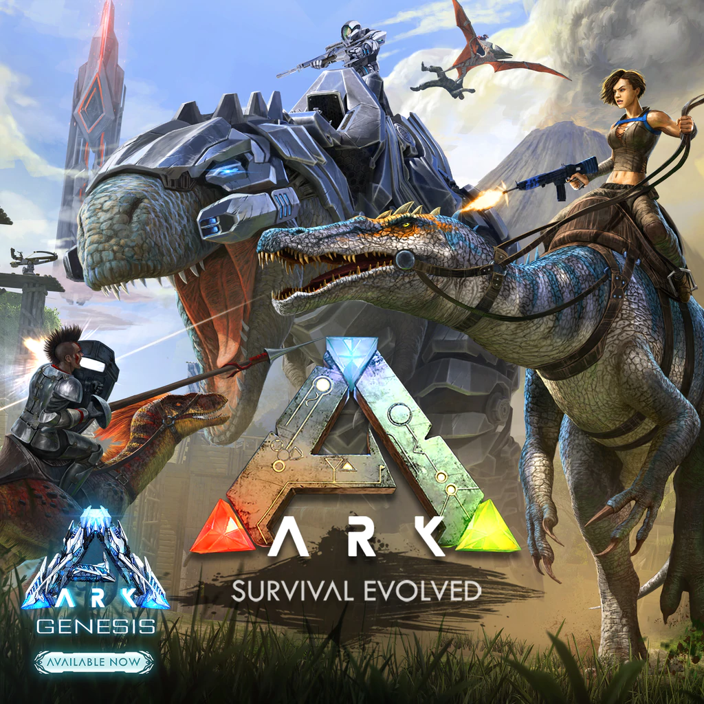
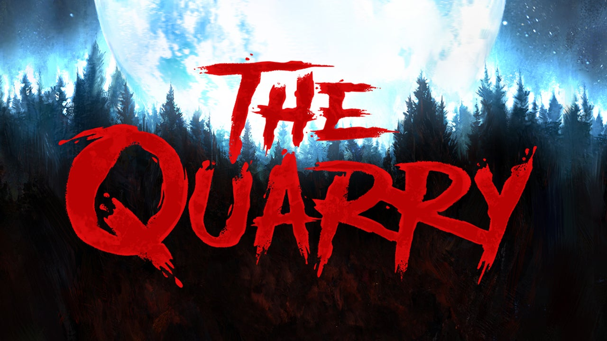

Ark:Survival Evolved
Initially ARK: Survival Evolved didn’t leave much of an impression on me. Not only did I forget I actually owned the game, but that I had played it as well during early access at some point. It got lost among a sea of other games of its ilk in a genre that I can only imagine is pretty much entirely saturated by now. So when I sat down to play it for review, I was curious if only because I was trying to piece together why I put it down in the first place. After many exhausting hours of play, I remember. While I think ARK is probably one of the best examples of the what the genre is actually capable of and blows many of its clones completely out of the water, I left it thoroughly exhausted by the grind, and vowed not to touch another game of its kind for a very long while. At the same time, ARK can also be a pretty incredible experience for all its many flaws, so for as numb as I was by the end of it, it gave me plenty to look back on with approval. B+ - John Smith
Forza Horizon 4
It's the best of both worlds, and the best Forza Horizon 4 has ever looked. (And it was already quite a looker.) In 4K, every detail looks sharp, from the stone walls you'll bust through every time you take a bad angle on a turn to the dials on your car's dash when you take a tour of the interior in your garage. At 60 frames per second, the more fluid animation intensifies the sense of speed that builds when you shift into high gear, whether you're gracefully drifting around sharp turns on Edinburgh's streets or launching off a ramp in the English countryside. The Xbox One X gave us a glimpse of next-gen gaming by allowing us to choose between these two technical advancements, but the Series X gives us the complete picture by combining them to make games that are incredibly detailed and smooth. A - Zachary Stephenson

The Quarry
Three hours with The Quarry gave me exactly what I expected from a spiritual successor to Until Dawn, for better and worse. Mechanically, it’s not moved on a bunch in the seven years it’s been since Rami Malek first freaked us all out. This is still very much an “interactive movie” and Supermassive makes no apologies about that. The love for decades of horror movies is on show for all to see, and the basic but effective gameplay of frequent tough decisions is perfect for the genre. You may only be making one significant button press every few minutes, but they each hold a huge amount of weight; it’s still hard to know what the repercussions will be, either immediately or six hours down the line. It’s that slow building of tension and sudden release of excitement that makes for a great horror movie, and a promising sign that The Quarry is heading in the right direction. C+ - Phillip Demin
Nba 2k22
NBA 2K22 makes some welcome changes to its on-court action. The new stamina system is a game-changer, leading to the series’ best offensive flow in years. Defensively, the tweaks to blocks and shot contests make the paint a dangerous place to be. However, the technical issues, questionable choices, and overuse of microtransactions in several of the modes keep it from being a real contender. There’s a high-quality basketball sim here, but it makes more unforced errors than you’d expect for a series that’s been iterating for so long. A+ - Matthew Norwood